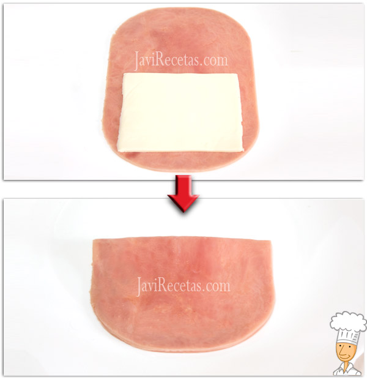

1º) Pon una loncha de queso sobre la mitad inferior de una loncha larga de jamón cocido y luego dobla a la mitad el jamón formando un librito. Si usas lonchas cuadradas coge dos y pon el queso entre ellas. Repite este paso hasta que tengas todos los San Jacobos montados.
2º) Pon a calentar aceite en una sartén. Ahora ve pasando los San Jacobos por la harina. Este paso es importante pues si los llevas directamente al huevo sin pasar por la harina el huevo no se agarraría bien al jamón y entonces tendrías que hacer un doble empanado.
3º) Bate los huevos con una pizca de sal (aproximadamente un tercio de una cucharada pequeña con sal). Luego pasa los Sanjacobos enharinados por el huevo. Que se empapen bien por ambas caras.
4º) A continuación mételos en el pan rallado y empana bien los San Jacobos.
5º) Cuando el aceite esté caliente ve friendo los San Jacobos por ambos lados. Al ser tan finitos se fríen en un par de minutos, cuando estén dorados sácalos del aceite y déjalos sobre papel de cocina para que absorban el exceso de grasa (así se mantendrá el empanado crujiente y los San Jacobos serán menos grasos). Y listo …. fuera de la cocina y a comer!!!!!
A la hora de freír los Sanjacobos no hace falta demasiado aceite. Con unos 3 dedos de profundidad es más que suficiente. Cuando el aceite esté caliente (no demasiado fuerte y que no eche humo) ve friendo los Sanjacobos por tandas o de uno en uno (según el tamaño de tu sartén). No los añadas todos a la vez para evitar que baje de golpe la temperatura del aceite. Si ésto ocurre el empanado se suelta del Sanjacobo y queda aceitoso y blando en vez de crujiente.
Puedes variar el relleno de tu San Jacobo añadiendo lo que más te guste, prueba con un poco de queso roquefort, con un poco de curry, …. También puedes dar más color y sabor al empanado añadiendo perejil o hierbas frescas.